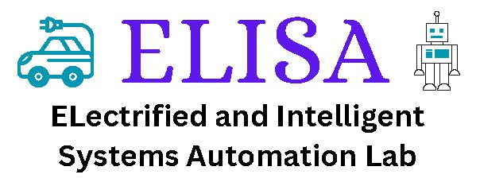
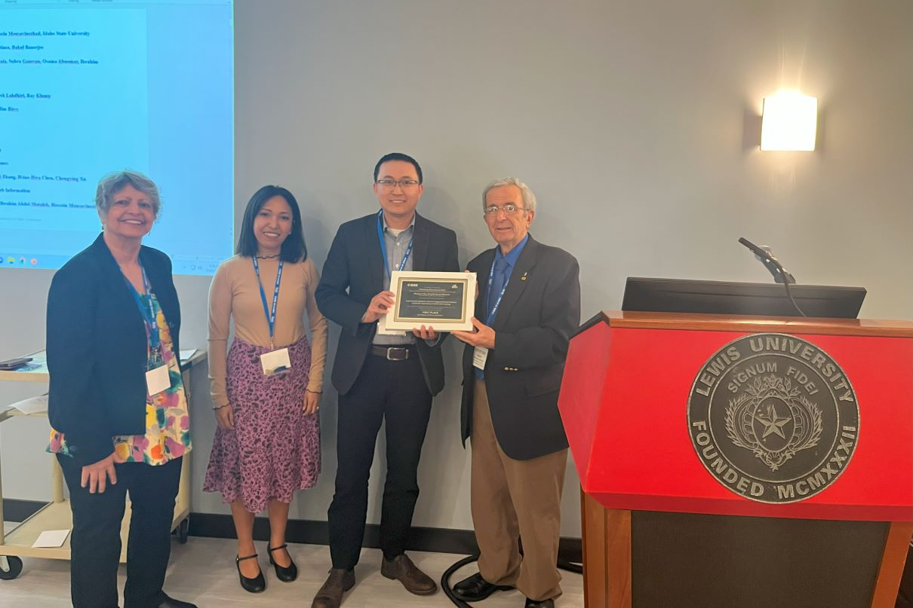

Jun Chen, Ph.D.

|
Biography
Dr. Jun Chen received his B.S. degree in Automation from Zhejiang University, Hangzhou China, in 2009, and Ph.D. degree in Electrical Engineering with minor in Computer Science from Iowa State University, Ames, IA, USA, in 2014. He was with Idaho National Laboratory from 2014 to 2016 as a research scientist, and with General Motors from 2017 to 2020 as a senior control engineer. Dr. Chen joined Oakland University in 2020, where he is currently an associate professor at the ECE department.
His research interests include advanced control and optimization, model predictive control, artificial intelligence, stochastic hybrid systems, with applications in automotive and energy systems. Dr. Chen is a recipient of the NSF CAREER Award from the National Science Foundation, the Best Paper Award from IEEE Transactions on Automation Science and Engineering, the Best Paper Award from IEEE EIT Conference, the Faculty Recognition Award for Research and the New Investigator Research Excellence Award from Oakland University, the Publication Achievement Award from Idaho National Laboratory, the Research Excellence Award from Iowa State University, and the Outstanding Student Award from Zhejiang University. He is/was an associate editor or editorial board member for IEEE International Conference on Robotics and Automation, American Control Conference, IEEE Conference on Control Technology and Applications, Systems Science & Control Engineering, Modeling, Estimation, and Control Conference, Journal of Control and Decision, IET Cyber-Systems and Robotics, Energy Systems, and IFAC Symposium on Advances in Automotive Control. He is currently a Senior Member of the IEEE and a Member of SAE.


(Photo credit Robert Hall)

(Best Paper Award at 2023 IEEE EIT)
News
09/2024: [Breaking!] Our project on Nex-Gen Electrification Testing and Standard Facility has been funded by National Institute of Standards and Technology! Glad to serve as co-PI for this exciting project.
08/2024: I have been promoted to Associate Professor (with tenure).
07/2024: David Flessner successfully defended his M.S. thesis. Congratulations, David!
06/2024: Our project on Sensor Reduction for Large Battery Packs has been funded by Michigan Translational Research and Commercialization (MTRAC) for Advanced Transportation Innovation Hub.
05/2024: Our project on Optimal Scheduling of Edge Devices for Decentralized Data Preprocessing has been funded by NSF IUCRC eCAT Center.
04/2024: I receive the New Investigator Research Excellence Award from Oakland University.
04/2024: I will join the Conference Editorial Board of the 2024 Modeling, Estimation and Control Conference as an associate editor.
03/2024: Luke Nuculaj successfully defended his M.S. thesis. Congratulations, Luke!
02/2024: We receive the INTERN supplemental funding from National Science Foundation to support Zhaodong for a 6-month internship with ClearMotion.
11/2023: I receive the Most Active Grant Seeker Award from Oakland University Research Office.
11/2023: Our project on Sensor Reduction for Battery Cell State-of-Charge Estimation has been funded by Michigan Economic Development Corporation.
06/2023: Our project on optimization and control of multi-energy systems with ocean energy has been selected for funded by Coastal Studies Institute. This is a collabration with Prof. Yang Chen and Prof. Om Prakash Yadav at North Carolina A&T State University.
05/2023: [Breaking!] Our paper, first-authored by Ph.D. student Zhaodong Zhou and co-authored by industrial collaborators, receives the Best Paper Award at 2023 IEEE EIT Conference. Congratulations, Zhaodong!
04/2023: Our NSF CAREER project on battery balancing control is highlighted in OU News.
02/2023: Christopher Rother successfully defended his M.S. thesis and he is joining Northrop Grumman. Congratulations, Chris!
12/2022: Our research on RL-assisted MPC is highlighted in Oakland Engineer.
12/2022: Our project on optimizing electric vehicles driving range has been funded by Oakland University URC.
11/2022: [Breaking!] Our project on CAREER: Reconfigurable and Predictive Control with Reinforcement Learning Supervisor for Active Battery Cell Balancing has been funded by National Science Foundation. Thank you NSF-ECCS!
11/2022: I will be the faculty advisor for Oakland Robotics Association. Come join us!
09/2022: Steven DeCoste won the 2022 ASME ICED Undergraduate Research Competition.
08/2022: I will join IEEE CSS Technology Conferences Editorial Board (TCEB) effectively January 2023.
08/2022: I was invited to join Editorial Board of IET Cyber-Systems and Robotics as an associate editor.
07/2022: Our paper on event-triggered MPC for power converter control has been accepted by 2022 IEEE Vehicle Power and Propulsion Conference. Congratulations Ranya!
05/2022: I gave a talk to ECE students at Kettering University, Flint, MI.
02/2022: Our paper on power converter MPC control has been accepted by 2022 European Control Conference. Congratulations Ranya!
02/2022: My project on battery balancing control has been funded by Michigan Space Grant Consortium.
02/2022: I was invited to serve as Associate Editor for IFAC Symposium Advances in Automotive Control.
01/2022: Our paper on RL-based MPC has been accepted by 2022 American Control Conference.
01/2022: I received a gift fund from Intelligent Fusion Technology.
12/2021: I presented one paper at 2021 IEEE CDC, Austin, Texas.
12/2021: I chaired the session "Object Detection and Retrieval" in the 20th IEEE International Conference on Machine Learning and Applications.
10/2021: [Breaking!] Our paper on stochastic prognosis of discrete event systems has been accepted by IEEE Transactions on Automatic Control.
05/2021: My first patent was granted by USPTO.
03/2021: I gave a guest lecture to University of Texas Rio Grande Valley, Edinburg, TX.
12/2020: Our project on automotive model predictive control has been funded by Oakland University URC.